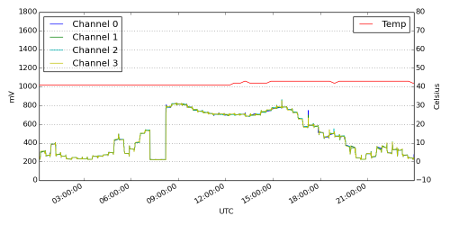
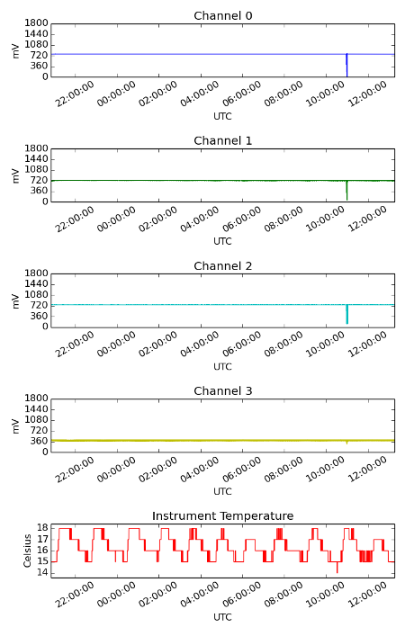

Starbase Starinet Python Logger
Publisher Module
The publisher command uploads a chart of the current dataset held on the controller to an FTP site of your choice.
To enable the publisher function of the controller use the setPublisher command found in the capture module.
You first need to set the upload interval within the range of 5 to 60 minutes, next set the target host address
plus user name, password and the remote folder you which to upload the generated image too. You can see the current
settings using the getPublisher command.
The publisher function of the controller can generate either one of the below two types of chart, combined and
stacked respectively.

The charts can be customised to some extent using the setPublisherArtist and setPublisherLabels
commands available in the publisher module. Use the setPublisherArtist to change the type of chart and to enable or
disable the individual channels. Use the setPublisherLabels to set the labels for each channel expect temperature.
Controller Hardware and Code
The controller code was developed in Python 2.7 on a Beaglebone Black Rev B microcontroller.
The controller code is free to use and modify and is available from http://github.com/Starbase/